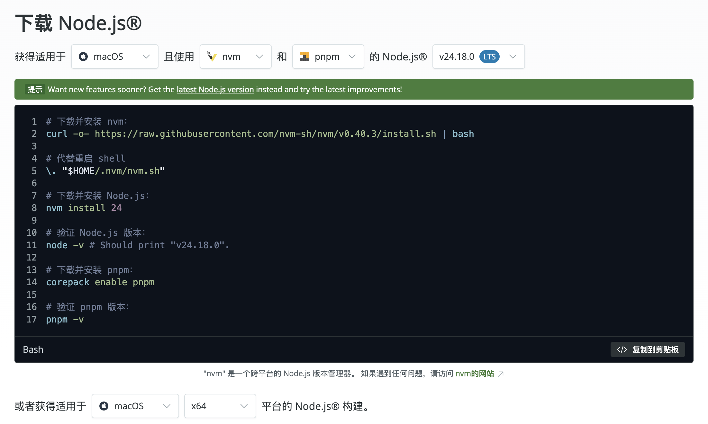

1、Node.js
1、Node.js 是一个让 JavaScript 能在服务器端运行的环境，它让前端开发者也能用熟悉的语言写后端程序。
2、Node.js 不是编程语言本身，而是JavaScript 的运行时环境，就像浏览器能运行JavaScript一样，它让JavaScript也能在服务器、命令行等地方跑起来。它基于Chrome的V8引擎开发，是开源跨平台的工具。
2、Node.js 下载安装

3、使用nvm控制node版本
- 1、当前使用的node版本
nvm ls
- 2、切换任意的node版本
nvm use 版本号
- 3、配置文件恢复node版本
在当前搭建工程根目录下加一个 .nvmrc 配置文件 写上当前搭建工程的node版本
4、使用nrm切换镜像源
- 1、安装
npm install -g nrm
- 2、查看所有可用的镜像源
nrm ls
- 3、切换镜像源为 taobao 镜像
nrm use taobao
5、pnpm
pnpm包管理工具
1、特点：速度快、节约磁盘空间、支持 monorepo、安全性高。
2、pnpm对比npm/yarn的优点：更快速的依赖下载、更高效的利用磁盘空间、更优秀的依赖管理。
pnpm的安装和使用
- 1、准备
Node环境(✔️) && npm环境（✔️）
- 2、安装
npm install -g pnpm
查看版本信息
pnpm -v
- 3、设置镜像源
查看当前配置的镜像源
npm config get registry
设置新的镜像源
npm config set registry https://registry.npmmirror.com/
检查新的镜像源是否设置成功
npm config get registry
- 4、常用命令对比
1、npm 命令
npm install 安装全部依赖
npm install (包名) 安装指定包
npm uninstall (包名) 移除指定包
npm run 脚本 运行脚本
2、yarn 命令
yarn install 安装全部依赖
pnpm add (包名) 安装指定包
yarn remove (包名) 移除指定包
yarn run 脚本 运行脚本
3、pnpm 命令
pnpm install 安装全部依赖
pnpm add (包名) 安装指定包
pnpm remove (包名) 移除指定包
pnpm run 脚本 运行脚本
6、依赖检查工具 - depcheck
- 1、安装
npm install -g depcheck
- 2、在项目中使用 Depcheck 检查依赖
depcheck
- 3、安装缺失依赖
npm install [缺失的依赖]
7、md文档转换为html页面工具 - i5ting_toc
- 1、安装
npm install -g i5ting_toc
- 2、实现 md 转 html
i5ting_toc -f README.md -o